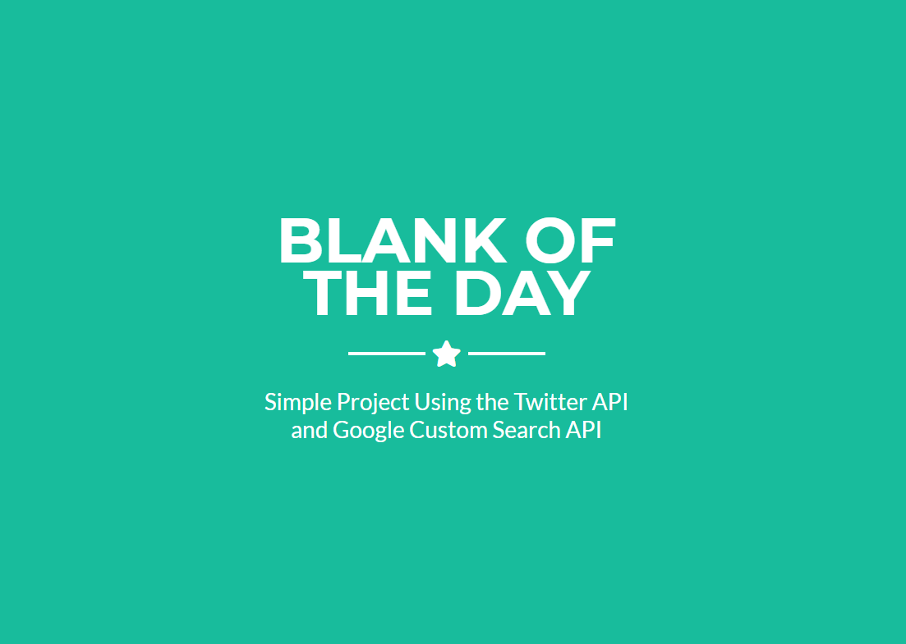
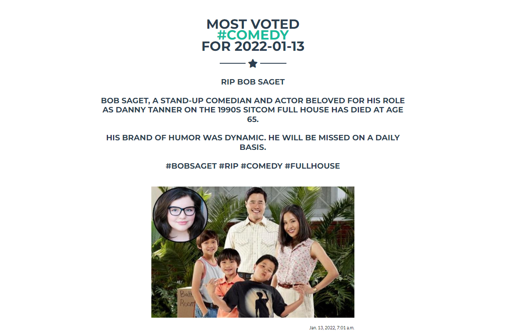

Project Description
In 2019 I went on a three week long vacation to Hong Kong, Japan, and Shanghai while not being allowed to put any weight on my left ankle. So for five days while my friends were snowboarding in Hokkaido, I worked on this project that uses the Twitter and Google custom search engine APIs to make automated daily "posts". The most commonly retweeted tweet with a given hashtag is used as a search query to obtain an image, then the image and the tweet are posted together, though they often have nothing to do with eachother. This is one of my favorite projects because it's alive in a way and always has something new for me whenever I remember it's existence. People say some crazy stuff on Twitter and there is just something about looking at an incomprehensible political rant and then looking down and seeing a completely unrelated image that amuses me. It's best to just peruse the actual website for examples, but I put one example below.
#Comedy
This is honestly how I found out Bob Saget died. And I got one more laugh out of him as I read a hearfelt tweetilogue and then was met with a picture of the cast of Fresh Off The Boat with giant smiles on their faces, as if his departure somehow allowed the success of their show. RIP Bob Saget.
